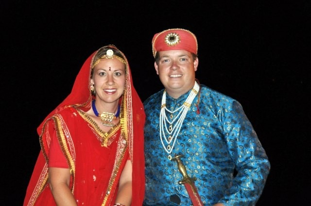

Long considered the most ‘romantic’ city in all of India, Udaipur makes it onto most travelers itineraries and rightfully so. Even during the dry season when the lake has shrunk almost leaving the lake palace high and dry it’s still a magical setting. With the lake serving as a natural barrier, the Rajput’s set up an elaborate castle along it’s shores. After successfully defending the castle, they further expanded their personal space with castles built on two different islands on the middle of the lake and a further, summer palace, high atop a nearby hill.
Once a year, faithful Hindu women dress in their finest and parade around town on their way down to the ghats for the Ganguar (also coincides with Mewar) festival. The statues represent a version of Pavarti, wife to Shiva – one of the three main Hindu gods. Married women pray to keep their husbands healthy and single women pray to find a good husband. The festival is one of the most colorful and famous of Udaipur and Rajhastan.
Part of the Mewar festivities included a “Best Dressed” foreigner competition. The Tourist bureau provided the costumes for free so we decided to give it a whirl just for the photo opportunities. After watching the fire dancing, the plate spinners and the lady who dances around with higher and higher stacks of bowls it was time for the ‘main event’ – us? That was what the announcer introduced us as anyways. Eight couples in total competed for the title. We were only told we had to dress up and parade out in costume for a few minutes. Little did we know that we also be asked a couple of questions – mainly they wanted to hear how great India and Udaipur are, have to dance a traditional dance and even give our hand at singing. It was all for fun and at the end of the day we all had a great time. When it came time to announce the results of the vote, we had won! Dinner at the Lake Palace here we come!
